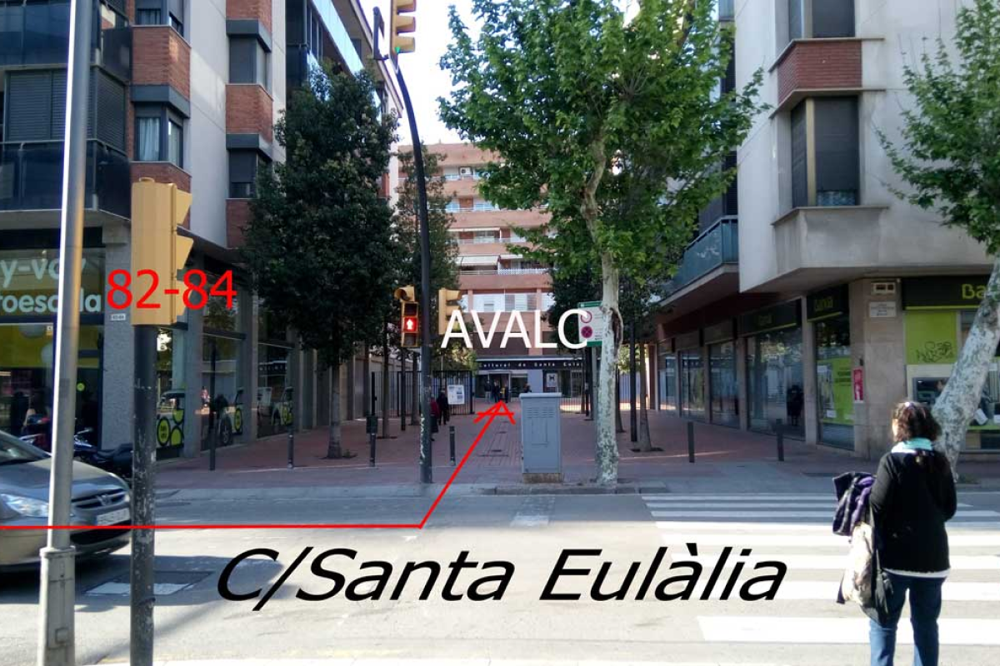

Contacta con nosotros
Puedes acudir para comentar tu caso. Nos reunimos todos los martes de 19:00 a 21:00.
- Centre Cultural de Santa Eulàlia
C/ Santa Eulàlia, 60. 08902
L'Hospitalet de Llobregat (Barcelona)
STA. EULÀLIA
-

MEDIDAS EXCEPCIONALES POR LA SITUACIÓN DEL COVID’19.
Debido a que la situación de la grave pandemia continua, y aún no podemos celebrar reuniones presenciales, estamos realizando reuniones virtuales a través de Zoom todos los martes de 18:00 a 20:00 horas.

Puedes contactar por teléfono (de 18 a 20 horas de lunes a viernes):
- 633 552 070
- 622 412 268
- 637 796 016 (psicólogo)
O por email:
- acosolaboralcat@gmail.com
¡Te contestaremos lo antes posible!
-

Si estás aquí es por qué crees que estás sufriendo acoso y necesitas nuestra ayuda lo antes posible.
Urgencias:
Si necesitas asesoramiento:
- 622 412 268
Si necesitas ayuda psicológica:
- 637 796 016
O puedes enviarnos un aviso mediante el siguiente formulario:
* ¡Todos los campos son obligatorios!